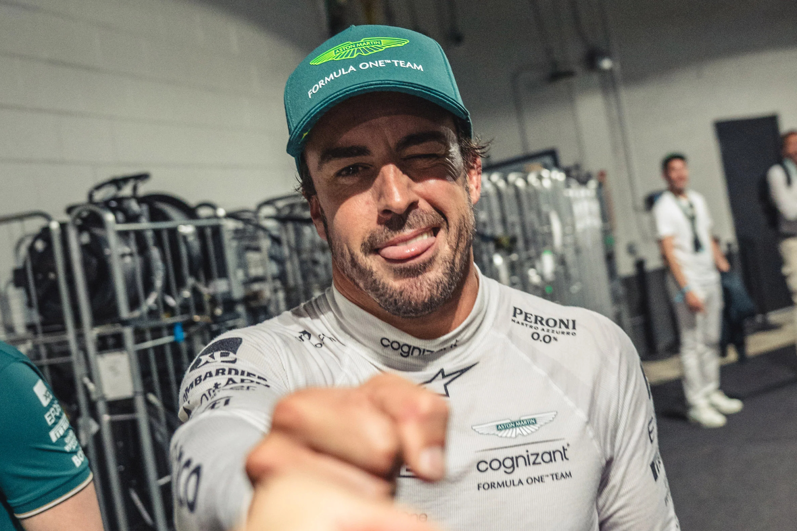

Soy Fernando Alonso, piloto español de Fórmula 1. Desde pequeño supe que mi vida estaría ligada al motor. Me apasiona competir, superar mis límites y representar a España en los circuitos más exigentes del mundo. Fuera de la pista, disfruto del ciclismo, los karts y pasar tiempo con mi familia.
- Amante del ciclismo y el entrenamiento físico
- Apasionado por la tecnología y la ingeniería automotriz
- Disfruto de la tranquilidad y la naturaleza fuera de las carreras
